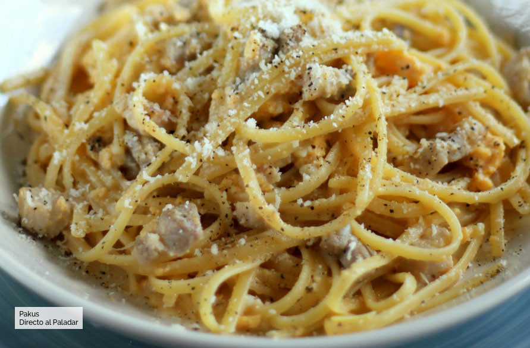

Espagueti a la carbonara

La carbonara auténtica es una receta humilde que se hace con muy pocos ingredientes, para condimentar los
espaguetis. Realmente solo lleva el guanciale -la carne de la papada de cerdo-, el queso pecorino y huevos
frescos. Con eso solamente, podrás hacer esta deliciosa salsa para pasta, que se condimenta con unas
vueltas del
molinillo de pimienta negra y un poco más de queso rallado por encima.
Ingredientes
- 5 yemas de huevo
- 1 huevo
- 100 g. de panceta (mejor si es Guanciale)
- 50 g. de queso pecorino
- Pimienta negra al gusto
- Sal
- Agua
- 320 g. de espaguetis
Preparación
- Corta en trocitos de pequeño tamaño la panceta y fríe esos trocitos hasta que comiencen a dorarse.
- Bate las 3 yemas de huevo con el huevo y el queso pecorino recién rallado hasta hacer una mezcla algo
espesa.
- Dale unos toues de pimienta negra a esa mezcla.
- Pon la pasta a cocer en agua abundante con sal, y sácala cuando falten un par de minutos para que esté al
dente.
- En la sartén donde habíamos reservado la panceta o el guanciale salteado, agregaremos la pasta escurrida a
la que añadimos la mezcla de huevos, queso y pimienta, mezclando bien. Agregamos también un cucharón del
agua de cocción de la pasta.
- Removemos mientras se van integrando los distintos ingredientes y se va haciendo una especie de salsa al
cuajar ligeramente el huevo con el caldo caliente de la cocción.
- Servimos espolvoreando de un poco más de pecorino rallado y dando un par de vueltas más de pimienta molida.